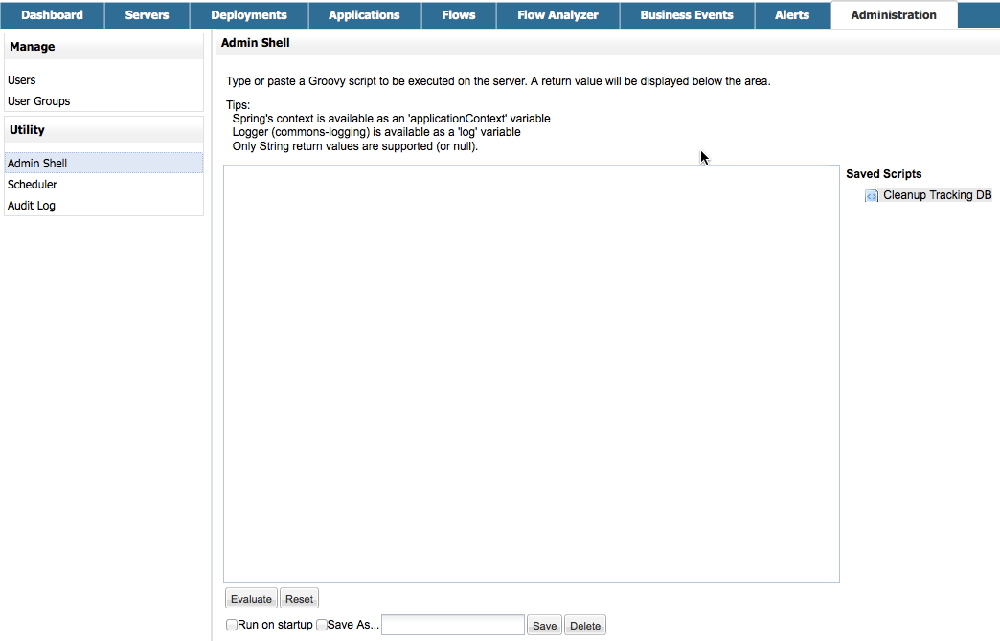

Persisting MMC 3.4.2 Data to MySQL
MMC Version 3.4.2 and Later
This document will cover how to persist environment and transaction data to MySQL databases. Follow the instructions to MySQL Installation, then follow the specific instructions for Persisting Environment Data or Persisting Transaction Data persistence to set up your user, create your database, and configure your MMC instance to persist your data.
| Remember that environment data and transaction data must exist in two separate databases (regardless of whether they are on the same server or use the same platform). |
Jump to:
Assumptions
This document assumes that you have an understanding of the data persistence options for environment and transaction data and that you are familiar with the basic Architecture of the Mule Management Console. It also assumes that you have installed:
-
MMC Version 3.4.2. Download it from the http://www.mulesoft.com/support-login[customer portal] if you need to upgrade to this version.
-
a Web application server such as Tcat, Tomcat, or JBoss. Please refer to the Hardware and Software Requirements for the latest information about hardware requirements and supported application servers, Java Runtime Environments, and browsers.
For practical purposes, this document mentions Tomcat as the servlet container; however, the instructions contained here apply also to Tcat or JBoss. If you are using Tcat or JBoss, make sure to unpack the Management Console .war file in the appropriate directory. For additional information, see Installing the Production Version of MMC.
|
In this document, If you are using the trial version, this is If you are using an application server such as Tomcat, this should be similar to |
MySQL Installation
The MySQL installation outlined here is basic: the database is installed on the local machine on the default port of 3306, with security deactivated (using an unsecured connection to the database, and a user with full admin rights).
Tools
This configuration was tested with MySQL Community Server 5.5.
Creating a database and database user in MySQL is relatively simple. You can perform these tasks either with the mysql command-line utility, or with the phpMyAdmin Web-based administration tool. This document does not describe how to set up or install MySQL, or how to create the tables with phpMyAdmin; however, it does list the commands to create the database, user, and tables for the environment data persistence example below. See the expandable section in Creating the Tables for details.
Persisting Environment Data
To set up MySQL to persist your MMC environment data, you need to complete these steps:
-
Create the database.
-
Create the database user.
-
Create the tables.
-
Set up MMC.
-
If your MySQL is on a remote host, perform some additional configuration.
|
The embedded database files for the Mule console reside at one of the following directories:
After you configure MMC to use an external database to store its persistent data, do not delete the |
Creating the Database
Create a new database with the following parameters:
-
Database name:
mmc_persistency_status -
Database owner:
MMC_STATUS
Creating the Database User
Create a new database user with default permissions and the following parameters:
-
Username:
MMC_STATUS -
Password:
mmc123
Creating the Tables
Navigate to the following directory: <MMC_HOME>/WEB-INF/classes/quartz. In this directory you will find two scripts for MySQL:
-
tables_mysql.sqlfor MySQL server versions earlier than 4.1 -
tables_mysql_version_4_1_and_above.sqlfor MySQL server versions 4.1 and above
Depending on your MySQL server version, execute the appropriate script in the target database, mmc_persistency_status.
|
Creating the database, user and tables with the mysql utility
The example below includes the command output for table At this point, youâve finished configuring MySQL. You can proceed to set up the Management Console to use the database youâve just created. |
Setting Up MMC to use MySQL for Persisting Environment Data
This example uses the parameters employed Persisting Environment Data when creating the MySQL database.
-
MySQL listening host and port: localhost port 3306
-
Database name:
mmc_persistency_status -
Database user:
MMC_STATUS -
Password:
mmc123
Obtaining MySQL Drivers
-
Download the latest MySQL driver. (You need a free Oracle account to download.) The driver is called
mysql-connector-java-<version>, such asmysql-connector-java-5.1.26. You can download the driver as a zip or tar.gz file. -
Extract the .zip or .tar.gz installation file. In the resulting directory structure, locate the file called
mysql-connector-java-<version>-bin.jar. This is the jbdc driver itself, that you will copy to the Management Console directory structure.
MMC Configuration
Configuring MMC to store data on a MySQL databse involves two basic tasks:
-
Modifying the file
web.xmlto tell MMC to use MySQL instead of its default database -
Modifying the file
mmc-mysql.propertiesto set the parameters for connecting to the MySQL database
Modifying web.xml
-
In the directory
<MMC_HOME>/WEB-INF, locate the fileweb.xml, then open it for editing. -
Locate the
spring.profiles.activesection, shown below.1 2 3 4
<context-param> <param-name>spring.profiles.active</param-name> <param-value>tracking-h2,env-derby</param-value> </context-param>
-
Delete the string
env-derby, then replace it withenv-mysql, as shown below.1 2 3 4
<context-param> <param-name>spring.profiles.active</param-name> <param-value>tracking-h2,env-mysql</param-value> </context-param>
-
If you are also planning to Persisting Transaction Data to MySQL, delete the string
tracking-h2and replace it withtracking-mysql.
The spring.profiles.active section in the web.xml configuration file allows you to define what external databases are used for storing environment and/or tracking data. For a quick instructions for all supported database servers, see Configuring MMC 3.4.2 for External Databases - Quick Reference. |
Modifying mmc-mysql.properties
-
In the directory
<MMC_HOME>/WEB-INF/classes/META-INF/databases, locate the filemmc-mysql.properties, then open it for editing. -
The table below lists the settings contained in the file. Modify the values as needed. In general, the only values that you should need to modify are
env.username,env.password,env.host,env.portandenv.dbschema.Parameter Description Default env.driverDriver to use for connecting to the database
com.mysql.jdbc.Driverenv.scriptScript to use for creating the tables in the target database
mysqlenv.usernameDatabase user
mmc_statusenv.passwordPassword for the database user
mmc123env.hostHostname or IP address where the database server is listening
localhostenv.portPort where the database server is listening
3306env.urlURL for connecting to the database
jdbc:mysql://${env.host}:${env.port}/${env.dbschema}env.dbschemaDatabase to connect to
mmc_persistency_status -
Save the file with your modifications, if any.
Removing Local Database Files
For the configuration changes to take effect, before launching MMC you need to delete the local database files that MMC uses by default.
In the root directory of your Web application server, locate the mmc-data directory (for example, /var/lib/tomcat6/mmc-data), then delete the mmc-data directory.
Before you delete mmc-data, make a backup copy of this directory and store it in a safe location. If anything goes wrong with your new database configuration, you can use mmc-data to restore the old database configuration while you troubleshoot your new database config in a test environment. |
At this point, MMC, is configured to store environment data on the external MySQL database that you specified.
Connecting to a Remote MySQL Server
If the MySQL server resides on a remote host, you are most likely unable to connect, unless you perform the following two actions:
-
configure the MySQL server to allow remote database connections
-
grant privileges to your database user allowing it to connect remotely
Both actions are described in the following two sections.
Remote Database Connections
-
To check that the MySQL server allows remote database connections, locate the MySQL server configuration file, for example
/etc/mysql/my.cnf. -
Search for the following line.
1
bind-address = 127.0.0.1
-
If the line exists, perform the following steps:
-
Stop the MySQL server.
-
Open the configuration file for editing, then comment out the line with a number sign (#), as shown below.
1
# bind-address = 127.0.0.1
-
Close the file, then restart the MySQL server.
-
Remote Access Privileges
-
To grant remote database access to your database user, login to MySQL as the MySQL server root user, using the following command.
1
mysql -u root -D mysql -p
-
Enter the password for root.
-
Obtain the 41-digit hexadecimal representation of the database userâs password (in this case, the password for user MMC_STATUS) by running the following command.
1
SELECT * FROM user WHERE User = '<user>';
-
In the output from the previous command, find, then copy the 41-digit hex number, which is preceded by an asterisk. Ensure that you save this number to your clipboard or a text file, since you will use it in the next step. A snippet of example output is shown below.
1 2 3 4 5
mysql> SELECT * FROM user WHERE User = 'MMC_STATUS'; +--------------+------------+-------------------------------------------+-------------+-------------+-------------+-------------+-------------+-----------+-------------+---------------+--------------+-----------+------------+-----------------+------------+------------+--------------+------------+-----------------------+------------------+--------------+-----------------+------------------+------------------+----------------+---------------------+--------------------+------------------+------------+--------------+------------------------+----------+------------+-------------+--------------+---------------+-------------+-----------------+----------------------+--------+-----------------------+ | Host | User | Password | Select_priv | Insert_priv | Update_priv | Delete_priv | Create_priv | Drop_priv | Reload_priv | Shutdown_priv | Process_priv | File_priv | Grant_priv | References_priv | Index_priv | Alter_priv | Show_db_priv | Super_priv | Create_tmp_table_priv | Lock_tables_priv | Execute_priv | Repl_slave_priv | Repl_client_priv | Create_view_priv | Show_view_priv | Create_routine_priv | Alter_routine_priv | Create_user_priv | Event_priv | Trigger_priv | Create_tablespace_priv | ssl_type | ssl_cipher | x509_issuer | x509_subject | max_questions | max_updates | max_connections | max_user_connections | plugin | authentication_string | +--------------+------------+-------------------------------------------+-------------+-------------+-------------+-------------+-------------+-----------+-------------+---------------+--------------+-----------+------------+-----------------+------------+------------+--------------+------------+-----------------------+------------------+--------------+-----------------+------------------+------------------+----------------+---------------------+--------------------+------------------+------------+--------------+------------------------+----------+------------+-------------+--------------+---------------+-------------+-----------------+----------------------+--------+-----------------------+ | localhost | MMC_STATUS | *14695FC49478AC013A63030250DD44DE579D54E1 | N | N | N | N | N | N | N | N | N | N | N | N | N | N | N | N | N | N | N |
-
Grant the privileges with the following command. For the
<password>parameter, paste the 41-digit hex number you copied in the previous step.1
GRANT ALL PRIVILEGES ON <database>.* TO '<user>'@'<host|net>' IDENTIFIED BY PASSWORD '<password>' WITH GRANT OPTION;
-
Tell the MySQL server to reload the grant tables, with the following command.
1
FLUSH PRIVILEGES;
|
Details and usage example for the GRANT ALL PRIVILEGES command The value of The value of A complete command example follows. |
|
Testing the remote connection with the telnet command If you are unsure of the MySQL server configuration, but are certain that you have connectivity to the MySQL server host and port (i.e. you are sure there are no routing issues, firewalls, etc. blocking connectivity), then you can use the If the MySQL server is not accepting remote connections, trying to telnet to the MySQL host and port results in a "Connection refused error," even if the server is indeed listening on the specified host and port. If the MySQL server is accepting remote connections, but there is no user allowed to connect remotely, the output appears similar to the following. In this example, the connection succeeds but is closed by the remote host. If connectivity to the MySQL server is fully working, and the server is granting user access, the output appears similar to the following. If you obtain this output, but cannot successfully connect the Management Console to the remote MySQL server, then something is likely wrong with the Management Console configuration. Check the logs in Mule or your Web app server for details. |
Persisting Transaction Data
To set up MySQL to persist your MMC transaction data, you need to complete these steps:
-
Create the database.
-
Create the database user.
-
Set up MMC.
Creating the Database
Create a new database with the following parameters:
-
Database name:
event_tracker -
Database owner:
MMC_EVENTS
Creating the Database User
Create a new database user with default permissions and the following parameters:
-
Username:
MMC_EVENTS -
Password:
mmc123
Setting Up MMC to use MySQL for Persisting Transaction Data
Obtaining MySQL Drivers
-
Download the latest MySQL driver. (You need a free Oracle account to download.) The driver is called
mysql-connector-java-<version>, such asmysql-connector-java-5.1.26. You can download the driver as a zip or tar.gz file. -
Extract the zip or tar.gz installation file. In the resulting directory structure, locate the file called
mysql-connector-java-<version>-bin.jar. This is the jbdc driver itself, that you will copy to the Management Console directory structure.
MMC Configuration
Configuring MMC to store Business Events data on a MySQL database involves two basic tasks:
-
Modifying the file
web.xmlto tell MMC to use MySQL instead of its default database -
Modifying the file
tracking-persistence-mysql.propertiesto set the parameters for connecting to the MySQL database
Modifying web.xml
-
In the directory
<MMC_HOME>/WEB-INF, locate the fileweb.xml, then open it for editing. -
Locate the
spring.profiles.activesection, shown below.1 2 3 4
<context-param> <param-name>spring.profiles.active</param-name> <param-value>tracking-h2,env-derby</param-value> </context-param>
-
Delete the string
tracking-h2, then replace it withtracking-mysql, as shown below.1 2 3 4
<context-param> <param-name>spring.profiles.active</param-name> <param-value>tracking-mysql,env-mysql</param-value> </context-param>
-
If you are also planning to Persisting Environment Data to MySQL, delete the string
env-derbyand replace it withenv-mysql.
The spring.profiles.active section in the web.xml configuration file allows you to define what external databases are used for storing environment and/or tracking data. For a quick instructions for all supported database servers, see Configuring MMC 3.4.2 for External Databases - Quick Reference. |
Modifying tracking-persistence-mysql.properties
-
In the directory
<MMC_HOME>/WEB-INF/classes/META-INF/databases, locate the filetracking-persistence-mysql.properties, then open it for editing. -
Modify the included settings as needed, according to the table below. In general, the only values that you should need to modify are
mmc.tracking.db.username,mmc.tracking.db.password,mmc.tracking.db.host,mmc.tracking.db.portandmmc.tracking.db.dbname.Parameter Description Default mmc.tracking.db.events.query.propKeysDo not change this value. This is a DB-engine-specific query to retrieve event keys.
SELECT DISTINCT t1.KEY0 FROM EVENT_PROPERTIES t1mmc.tracking.db.platformType of database server to connect to
mysqlmmc.tracking.db.driverDriver to use for connecting to the database
com.mysql.jdbc.Drivermmc.tracking.db.hostHostname or IP address where the database server is listening
localhostmmc.tracking.db.portPort where the database server is listening
3306mmc.tracking.db.urlURL for connecting to the database
jdbc:mysql://${mmc.tracking.db.host}:${mmc.tracking.db.port}/${mmc.tracking.db.dbname}mmc.tracking.db.usernameDatabase user
mmc_trackingmmc.tracking.db.passwordPassword for the database user
mmc123mmc.tracking.db.dbnameDatabase to connect to
persistencymmc.max.events.exception.details.lengthNumber of characters from a Business Events exception that will be stored in the tracking database. The maximum allowed is 261120.
8000 -
Save the file with your modifications, if any.
Removing Local Database Files
For the configuration changes to take effect, before launching MMC you need to delete the local database files that MMC uses by default.
In the root directory of your Web application server, locate the mmc-data directory (for example, /var/lib/tomcat6/mmc-data), then delete the mmc-data directory.
Before you delete mmc-data, make a backup copy of this directory and store it in a safe location. If anything goes wrong with your new database configuration, you can use mmc-data to restore the old database configuration while you troubleshoot your new database config in a test environment. |
At this point, MMC, is configured to store environment data on the external MySQL database that you specified.
Modifying the Cleanup Script for MySQL
MMC includes a script to perform a routine cleanup of the MMC database, which by default takes place every day at midnight. The current script for MySQL contains a bug which causes MySQL to throw an SQL exception. To avoid this issue, replace the original script with the one provided below, by completing the following steps.
New Cleanup Script
Click for the new cleanup script
1
2
3
4
5
6
7
8
9
10
11
12
13
14
15
16
17
18
19
20
21
22
23
24
25
26
27
28
29
30
31
32
33
34
35
36
37
38
39
40
41
42
43
44
45
46
47
48
49
50
51
52
53
54
import javax.persistence.EntityManager;
import javax.persistence.EntityManagerFactory;
import javax.persistence.Persistence;
import org.springframework.jdbc.datasource.DriverManagerDataSource;
import com.mulesoft.mmc.tracking.repository.jpa.entities.*
import java.util.Calendar;
def logger = log
def oneWeekAgo = Calendar.getInstance()
oneWeekAgo.add(Calendar.DAY_OF_MONTH, -7);
log.info("About to delete all tracking details older than "+oneWeekAgo.getTime());
DriverManagerDataSource ds = applicationContext.getBean("dataSource");
Properties properties = new Properties();
properties.put("openjpa.jdbc.DBDictionary", "mysql");
properties.put("javax.persistence.jdbc.url", ds.getUrl());
properties.put("javax.persistence.jdbc.user", ds.getUsername());
properties.put("javax.persistence.jdbc.password", ds.getPassword());
properties.put("openjpa.ConnectionDriverName", "com.mysql.jdbc.Driver");
EntityManagerFactory emf = null;
EntityManager em = null;
try {
emf = Persistence.createEntityManagerFactory("tracking-persistence-unit", properties);
em = emf.createEntityManager();
em.getTransaction().begin();
em.createNativeQuery("DELETE p FROM EVENT_PROPERTIES p where p.id in (select e.id from EVENTS e where e.transaction_id in (select t.id from TRANSACTION_SUMMARIES t where t.timestamp < ?1))").setParameter(1, oneWeekAgo).executeUpdate();
em.createNamedQuery(EventEntity.DELETE_OLDER_THAN_QUERY_NAME).setParameter("timestamp", oneWeekAgo).executeUpdate();
em.createNamedQuery(TransactionSummaryEntity.DELETE_OLDER_THAN_QUERY_NAME).setParameter("timestamp", oneWeekAgo).executeUpdate();
em.getTransaction().commit();
} catch (RuntimeException re)
{
if (em?.getTransaction()?.isActive()) {
em.getTransaction().rollback();
}
throw re;
}
finally {
em?.close();
emf?.close();
}
Replacing the Old Script
-
Log in to MMC.
-
Go to the Administration tab, then Admin Shell. You should see the following screen.

-
Click Cleanup Tracking DB in the column to the right. This displays the contents of the script in the editor box, as shown below.

-
Now you can edit the script as desired. Delete all of the contents of the script, leaving the editor blank.
-
Copy-paste the New Cleanup Script into the editor.
-
Click Save Asâ¦â under the editor.
-
In the input field next to Save Asâ¦â, type
Cleanup Tracking DB(case sensitive), then click Save. This causes the new script to overwrite the old one.
See Also
-
Read more about MMC setup.
-
Review the Architecture of the Mule Management Console.